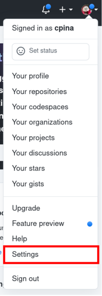
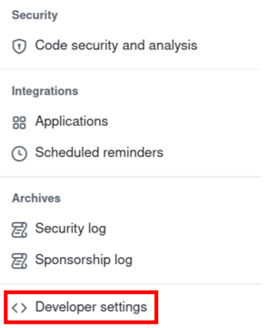
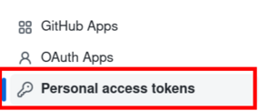
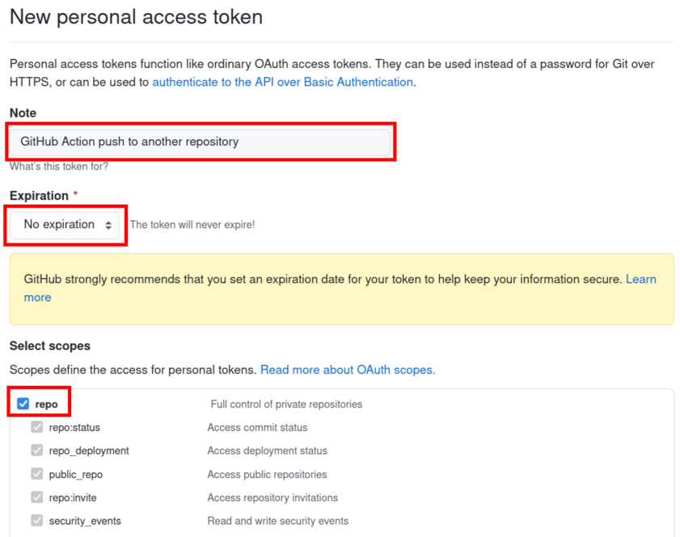
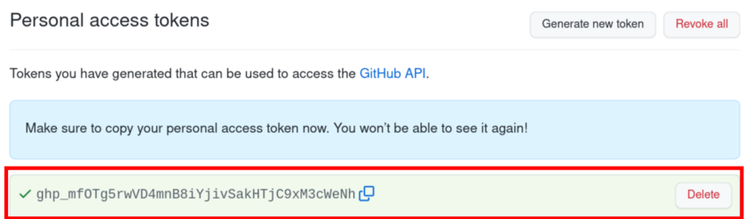
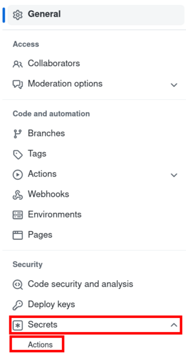
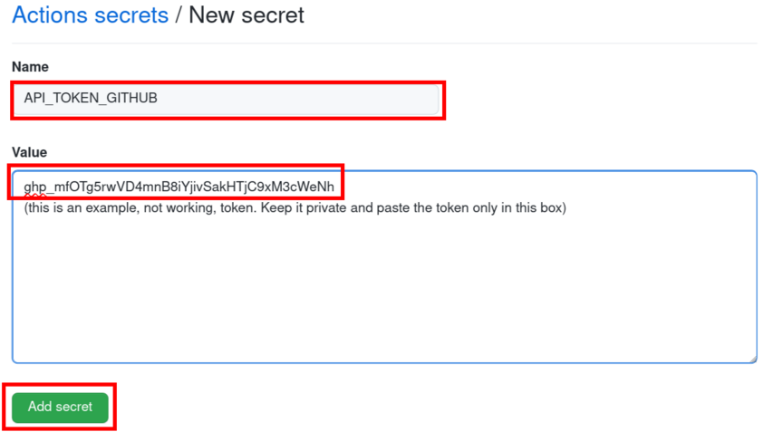

Setup using the Personal Access Token
This does not need to be done if you chose to set up the deploy keys using the steps above. This method is here for compatibility with the initial approach of this GitHub Action. The Personal Access Token would have access to all your repositories, so if it were to be leaked, the damage would be greater: it would allow pushes to the same repositories to which the Personal Access Token owner has access, and other possible associated permissions. On the other hand, the setup is a bit easier because it does not involve creating the deploy key.
- Generate your Personal Access Token using the following steps:
Go to the general GitHub Settings (on the right-hand side on the profile picture)
On the left-hand side pane, scroll to the bottom and click on “Developer Settings”
Click on “Personal Access Tokens” (also available at https://github.com/settings/tokens)
Generate a new token entering a name and expiration date, and choose “Repo”. Click the bottom button “Generate token”. If you choose an expiration date you will need to create a new token after this date. In this example, I have used “No expiration”; this should be used carefully.
Copy the displayed token

Then make the token available to the GitHub Action using the following steps:
Go to the GitHub page for the repository that you push from (origin repository). Click on “Settings” for the repository
Click on “New repository secret”
)
Name: “API_TOKEN_GITHUB”
Value: paste the token that you copied earlier
Click on “Add secret”
